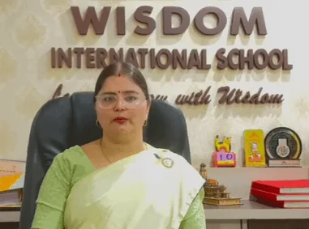

Beyond a degree or designation.
These are stories of students who met uncertainty with courage and grew through education, guidance, values and sustained human relationships.
A Life Shaped Through Learning
Education became confidence. Confidence became leadership.
Success here is not measured only by professional achievement. It is also visible in self-respect, stability, character and the ability to create opportunity for others.

An Educator Guiding the Next Generation
Poonam Mishra Principal, Wisdom International School, Jodhpur
Supported from Class 6 through the completion of her M.Sc., Poonam’s relationship with the Trust continued across the most formative years of her education. What began as assistance for a student became the foundation of an independent life devoted to learning.
Today, as a school principal, she helps shape the educational journeys of young people in her own care—an expression of how one supported life can quietly influence many more.
One opportunity can become a lifetime of opportunities for others.
Different Paths, Shared Inner Strength
Four more journeys that continue to inspire
Each story begins in a different circumstance, but each reflects the same continuity of care: financial support joined with mentorship, Sanskar and the confidence to move forward.
JSChartered Accountant & Company Secretary
Jyoti Soni
After the loss of her father during Class 12, Jyoti faced emotional and financial uncertainty. Educational assistance and sustained guidance through the Sunday Sanskar sessions helped her regain calm, purpose and confidence. She qualified as a CA and CS and built an independent professional life.
Neetu received educational support from Class 9 through M.Com after her family lost its financial anchor. She went on to build a stable career with the State Bank of India and now contributes regularly to help another student receive the opportunity once extended to her.
With encouragement that nurtured confidence alongside education, Sejal advanced into the technology profession and now works as a software engineer. Her journey reflects how sustained belief can expand a young student’s sense of what is possible.
Continuous educational guidance helped Kumudini progress through higher study and into teaching. As a chemistry lecturer, her knowledge now reaches new classrooms and new generations of learners.
With financial pressure eased and her education grounded in gratitude and purpose, Meenu pursued academic excellence at JNVU, Jodhpur and graduated at the top of her M.Com class as a gold medallist.